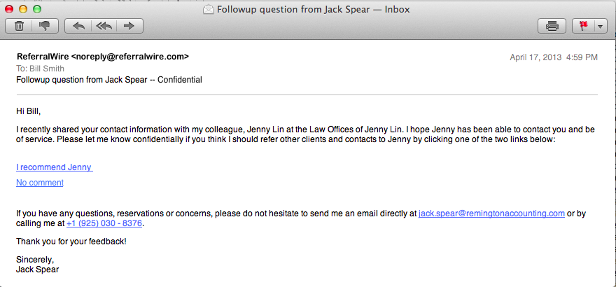

It also includes a place to add a thumbnail-sized photograph of yourself. Photos enable partners who may have only met you once or twice to "put a face to the name." For best results, the photograph should be the same height and width. It should also be less than an inch tall.
Getting There To set up your contact information click on: Menu > My Account > Contact Info
Search Tags By default ReferralWire enables your partners to find you by typing any of the following into a list filter:
To use this feature, simply type a list of terms into the Search Tags field separated by spaces. The Search Tags field will accept a maximum of 50 characters.
The qualifications view includes a place to add to a larger picture of yourself and an image of your company's logo. For best results, your picture should be approximately 1 inch wide and 1.5 inches tall. Your company's logo should be square and no more than 1 inch tall and wide.
Power Partners The qualifications page provides a place for you to declare up to three different "Power Partner" categories. These represent other types of businesses that provide complementary services to your clientele.
Getting There To set up your contact information click on: Menu > My Account > Qualifications
Printing your Qualifications To print your profile, click on the print icon . Your browser must accept pop up windows from ReferralWire for you to see the print-optimized window containing your profile. Note: At this time, the print feature is only supported on Chrome and Safari.
Getting There To set up your testimonials click on: Menu > My Account > Testimonials
Getting There To set up your photo portfolio click on: Menu > My Account > Photos
Supported Files You can upload up to nine photos. The photos can use any standard image type -- i.e., .png, .jpg, or .gif. For best results, use pictures that are the same size and are large enough to expand to the full size of the screen.
Copyright Considerations It is your responsibility to adhere to all copyright restrictions in accordance with applicable laws. This obligation is included in ReferralWire's terms of service.
Getting There To set up your preferences click on: Menu > My Account > Preferences
To change your password, type in your current password followed by the new password. Confirm the new password by typing it in a second time. When finished, click Submit and you will be logged out of the application. Log back in using the new password.
Getting There To change your password click on: Menu > My Account > Password
Platform Requirements Importing vcards is not supported on Internet Explorer 9.
Steps
Pre-requisites
You must be using Internet Explorer 9 or 10 (10 is preferred).Steps
Pre-requisites Download the ReferralWire Android application from Google Play -- or download the iPhone application from the Apple app store.
Steps
The smartphone contact import feature will import all of the contacts from your phone into your ReferralWire account. If there are contacts you wish to leave out, you can select and delete these individually after the import completes.
If you have a large number of contacts, the process may a couple minutes to complete.
Steps

When your contact replies to survey, you'll be notified by email. The contact's feedback is shown in the referral record with a thumbs up or thumbs down icon.Smartphones: ReferralWire has smartphone applications for both the Android and iOS (iPhone) operating systems. These are available for download and installation from Google Play and the Apple App Store respectively. Version support for these devices is as follows: